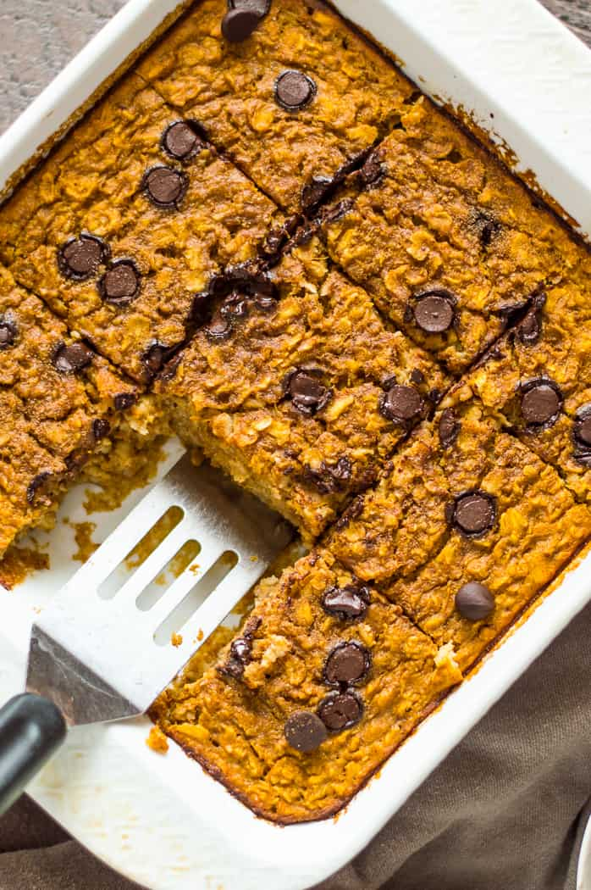

Baked Pumpkin Oats Recipe
OG Recipe Location

Description
Jump into fall with this Pumpkin Baked Oatmeal. Easy to make, delicious and
full of warm flavors. Easily gluten free and dairy-free, this is a perfect
healthy breakfast or a great recipe to make as part of meal prep.
Ingredients
- olive oil or avocado oil , for greasing
- 2 cups rolled oats
- 2 teaspoons pumpkin spice
- 1 teaspoon baking powder
- 1/4 teaspoon salt
- 1 cup pumpkin puree, not pumpkin pie filling
- 1 1/4 cup milk of choice
- 2 large eggs
- 2 teaspoons vanilla
- 1/3 cup maple syrup or honey
- chocolate chips, nuts, raisins or topping of choice
Steps
- Preheat the oven to 375℉ degrees. Grease an 8x8 baking dish with oil.
- In a medium bowl, combine oats, pumpkin pie spice, baking powder, and salt. Mix to combine.
- Add pumpkin puree, milk, eggs, vanilla, and maple syrup/honey to bowl. Stir to combine.
- Spread into the prepared baking dish. Bake for 30-35 minutes. Oatmeal is done baking when it is puffed up on the edges, set in the middle and top is golden.
- Let cool for 5 minutes before slicing. It will be soft at first but will firm up as it cools. Enjoy warm topped with yogurt, a splash of milk, a drizzle of honey or maple syrup, fruit, whipped cream or simply on its own. Let cool completely and store in fridge for up to 4 days.